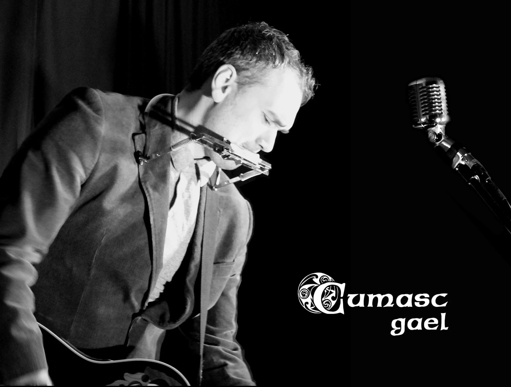

Since those early days in Gartlans the band started making progress in the local North-East area, going from strength to strength, in increasingly larger venues, entertaining a growing, passionate fanbase wherever they travelled
David Calikes 
And travel they have. Just these past few months the band has performed up and down the eastern seaboard of the United States, thrilling audiences in Washington DC, Charlotte NC, and Miami FL. In the meantime, you can check out a list of the band's future homecoming dates by visiting the Home page.
(Further European dates TBA)